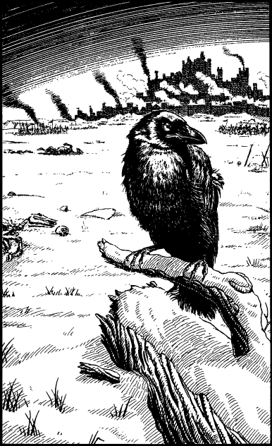

262
You send one of the scouts to summon Captain Schera and his men, and when they arrive they are treated most hospitably by the mercenaries who, despite their own hunger, unselfishly share out their meagre rations.
You stay here overnight and break camp at dawn. The Baron’s regiment has suffered heavily in battle and now totals little more than forty men, and so you have no difficulty in finding room for them in the boats. Captain Schera is especially pleased to have these warriors aboard. Despite their losses, they are a cheerful group and they help lift the morale of his men.
The journey downstream passes swiftly and without incident until, shortly before noon, the sky grows steadily darker. An orange glow illuminates the distant horizon, and you can see many pinpoints of fire spread all across the land. An eerie silence descends on the flotilla as it draws nearer to the city of Darke. Shortly after, you see lines of troops marching towards the glowing skyline. Then you witness isolated actions taking place in the surrounding fields as groups of Lencian knights, cut off during the retreat, fight desperate hand-to-hand battles with Drakkarim cavalry. Some Drakkarim horse scouts have reached the river bank, and as you pass them, they open fire at you with their bows. But the swift current soon carries the flotilla away and there are few casualties.

It is an hour past noon when you first see the forbidding city of Darke. A great battle is raging around its mighty walls and bastions, and the noise and stench of this fierce conflict comes gusting towards you on the chill winter wind. The river current is getting stronger as it approaches the sea, and so you signal to the other boats to row for the bank. You put ashore on the right bank and both Captain Schera and Baron Maquin have their men take up defensive positions here. There is a road close by, running parallel to the river, and beyond it lies a snowy expanse of open plain on which many regiments of Drakkarim, and some Giaks, are marching towards the city. You are observing the distant battle when a large black carrion crow lands on a nearby log and stares at you with a cold, beady eye.
If you possess Animal Mastery, turn to 168.
If you do not possess this Discipline, turn to 302.